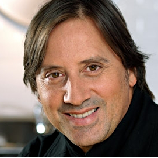

La qualité de son aiguisage est assez exceptionnelle. J`ai remarqué que les couteaux restaient affûtés très longtemps et sa méthode n'abîme pas les couteaux durant leur aiguisage
Daniel Vézina, Chef propriétaire
C'est important de faire affûter ses couteaux, ils sont moins dangereux. J'ai expérimenté l'affûtage de M. Dumont, il dure plus longtemps, la qualité de son affûtage est incroyable
Robert Daignault , Chef

Je possède plusieurs couteaux de la marque Henckel haut de gamme et le travail minutieux de M. Dumont a non seulement préservé la qualité de ceux-ci, mais également leur durée de vie
Thea, cliente résidentiel